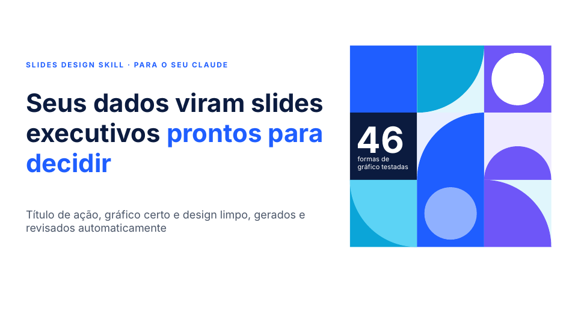
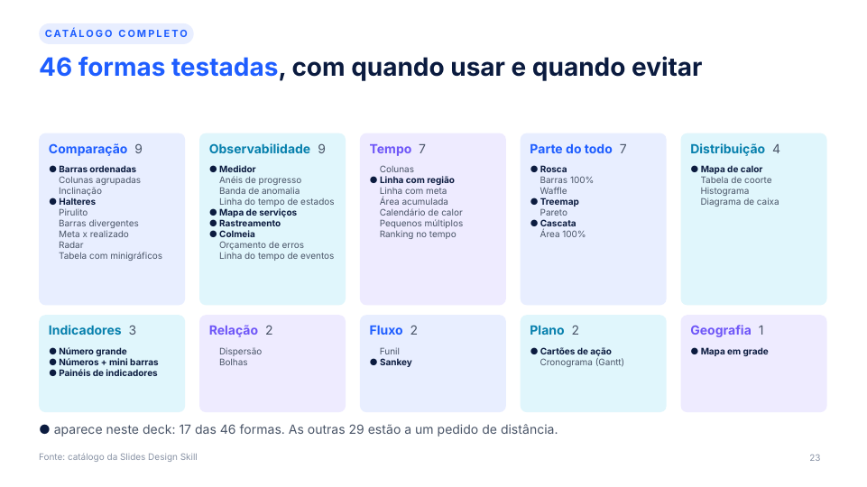
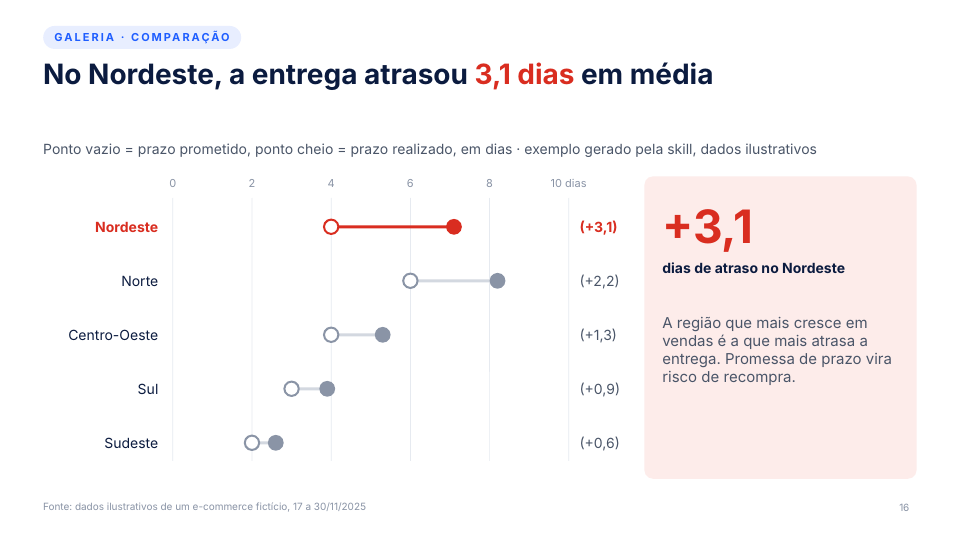
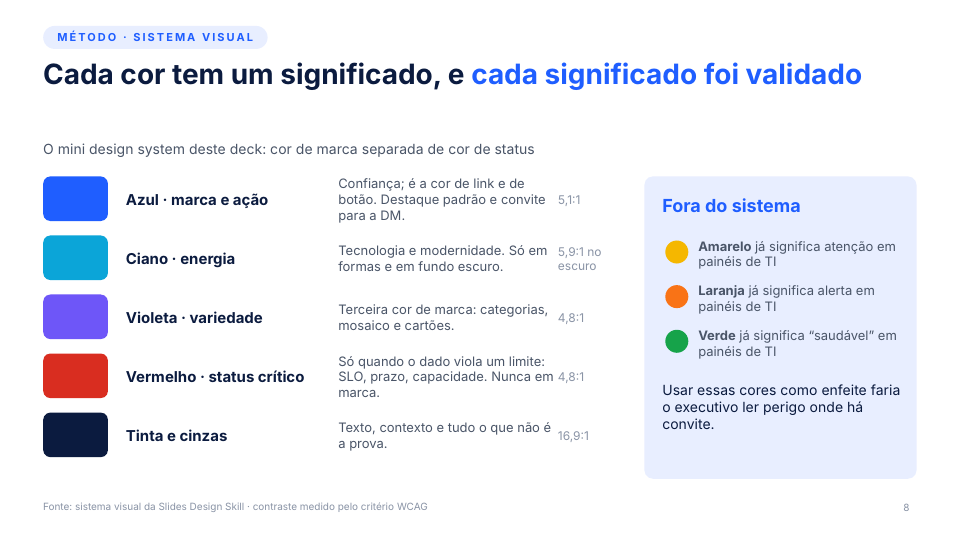
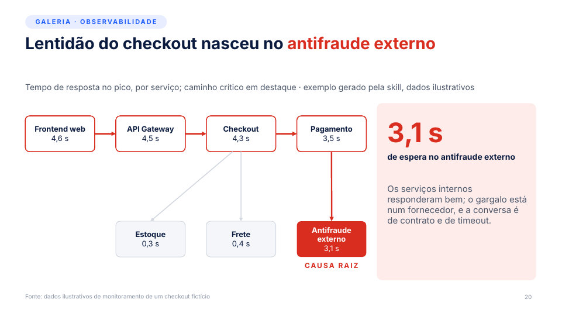

A Slides Design Skill atua como diretor de arte de apresentações executivas e de vendas: escreve o título de ação, escolhe o gráfico certo entre 46 formas, aplica um design system com cores de significado e critica o próprio slide antes de entregar o PowerPoint.

Um executivo decide em segundos se o slide merece atenção. A skill entrega a conclusão no título, a prova no gráfico e nada mais.
Troca rótulo de tópico ("Resultados da POC") por conclusão com número ("POC encontrou a causa raiz em 4 min, contra 2 h hoje"). Encurtar nunca autoriza afirmar mais do que o dado mostra.
Parte do verbo do título, filtra pelo formato dos dados e pelo contexto da audiência. São 46 formas, cada uma com quando usar, quando evitar e título-modelo.
Cinza para o contexto, uma cor para a prova, rótulos diretos no lugar de legenda. O olho vai ao título e depois ao dado.
Cor é significado: marca em tons frios, vermelho só como status crítico. Todos os pares de texto passam no contraste WCAG.
POC, business case e ROI, discovery, QBR, comparativo com concorrente, RFP, pós-incidente e resultado comercial.
Renderiza, responde 13 checagens (da mensagem em 3 segundos à semântica de cor) e corrige antes de entregar.
A skill é a pasta skill/slides-design-skill/, com o SKILL.md dentro. Primeiro clone o repositório.
git clone https://github.com/adrianorafael/slides-design-skill.git cd slides-design-skill
# pessoal (vale para todos os projetos) cp -r skill/slides-design-skill ~/.claude/skills/ # ou só no projeto atual cp -r skill/slides-design-skill .claude/skills/
./scripts/package.sh # cria dist/slides-design-skill.zip
Depois envie o .zip na área de Skills das configurações do Claude.
.pptx (pptxgenjs, edição de template, validação e renderização) vem da skill pptx, que precisa estar disponível no mesmo ambiente.Não precisa chamar a skill pelo nome: peça o deck ou a revisão e ela entra sozinha. Quanto mais clara a decisão esperada, melhor o roteiro.
Criar um deckMonte o deck de resultado da POC para o comitê de compras. Decisão esperada: aprovar a implantação. Dados em anexo.
Revisar um deckRevise este deck: reescreva os títulos como títulos de ação e troque os gráficos que não provam o título.
Escolher o gráficoTenho o tempo de resposta do checkout por hora, com um SLA de 2 s. Qual gráfico prova que o pico estourou o limite?
Usar a sua marcaAplique o template em anexo (.pptx) neste roteiro de QBR. Se faltar gráfico na biblioteca, desenhe com formas.
Com tema de PowerPoint aplicado e gráficos nativos editáveis sempre que a forma existe.
Só os títulos de ação, em sequência. Lidos sozinhos, contam a história e terminam num pedido.
O que foi assumido (audiência, uso, decisão) e quais gráficos são nativos ou desenhados com formas.
A ordem importa: a mensagem vem antes do visual. Se o roteiro de títulos não conta a história, o problema é de raciocínio, não de design.
Audiência, decisão esperada e uso (ao vivo ou lido sozinho). Se você não disse, ela assume "ao vivo, diretoria, aprovar um próximo passo" e avisa na entrega.
Sequência de conclusões com número, partindo do contexto de vendas quando ele se aplica.
Título de ação, dado que prova, forma, o que recebe o destaque, anotação e o "e daí?". Sem "dado que prova", o slide ainda não tem mensagem.
Modo template, se você trouxe .pptx ou marca. Modo mini design system (Sinal), se não trouxe.
Receitas em pptxgenjs, com gráficos nativos sempre que a forma existir.
Renderiza, passa pelas 13 checagens de designer e corrige. Uma rodada é o mínimo.
Fórmula: sujeito, verbo forte e resultado quantificado. Uma linha é o alvo, duas é o teto, e o número vai na cor de destaque.
| Em vez de | Escreva |
|---|---|
| Análise de vendas do 4º trimestre | Vendas do 4º tri cresceram 12%, puxadas pelo canal digital |
| Tempo de resposta por aplicação | Checkout responde 3x mais devagar que o restante da jornada |
| Resultados da POC | POC encontrou a causa raiz em 4 min, contra 2 h hoje |
Cada forma traz quando usar, quando evitar, título-modelo, destaque e receita de construção. O caminho: verbo do título, formato dos dados, contexto da audiência e um teste antes de construir.


Padrão usado quando você não traz template nem marca. Regra-mãe: cor é significado. Cor de marca só em tons frios; cor de status só quando o dado tem aquele sentido.
#1F5EFF#0BA5D8#6E56F8#D92D20#0B1B3F#4A5568 · #8A94A6 · #D3D8E0Tudo o que não é a prova fica em cinza. O destaque padrão é o azul, a cor de link e de botão.
Aparece quando o dado viola um limite (SLO, prazo, capacidade), com o limite no slide. Nunca em marca ou CTA.
Amarelo, laranja e verde já têm significado em painéis de TI. Usá-los como enfeite faria o executivo ler perigo onde há convite.

Tokens em sinal.tokens.json; o contraste é conferido por scripts/contrast.py.
A skill olha o slide renderizado como se fosse de outra pessoa. O que falha é corrigido e renderizado de novo.
A pasta examples/pitch-deck/ traz 25 slides no design system Sinal: o .pptx, o .pdf e o gerador em pptxgenjs.
cd examples/pitch-deck PPTX_SKILL_DIR=/caminho/da/skill/pptx node deck.js # aplica as cores ao tema do PowerPoint python3 post.py Slides_Design_Skill_pitch.pptx # lacunas de séries e número junto da unidade
